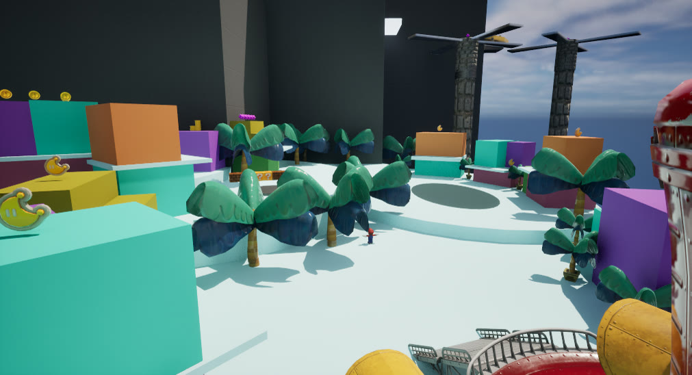

Cloudtop Kingdom
Level Designer, solo project 2024
What I did
- Structured the level around vertical progression through cloud platforms, castle architecture, and floating islands.
- Kept sightlines to the goal in every section, so players always know where they are heading.
- Blocked out in phases, settling jump distances and camera angles before adding visual detail.
The level
Cloudtop Kingdom is a 3D platformer level design exercise built in Unreal Engine 5, inspired by the spatial design language of Super Mario games. It is a vertically oriented kingdom with clear visual landmarks, readable platforming paths, and a sense of scale that rewards exploration.
Each section introduces a new spatial challenge. The architecture tells the story of a place built upward into the sky, with increasingly precarious platforms and grander vistas as the player climbs.
Process
Playtesting focused on whether players could read the intended path without explicit guidance, relying on color, scale, and spatial composition to communicate direction.
Takeaways
This project reinforced the principles of vertical level design: how elevation changes create drama, how sightlines guide the player, and how Mario-style platformers use scale and repetition to build a vocabulary of spaces the player can read intuitively.